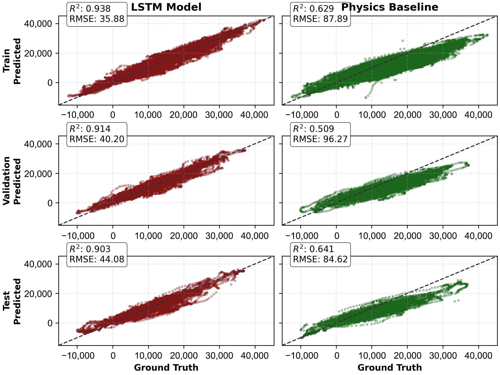

Traditional routing algorithms optimizing for distance or travel time are inadequate for electric vehicles (EVs), which require energy-aware planning considering battery constraints and charging infrastructure. This work presents an energy-optimal routing system for EVs that integrates personalized consumption modeling with real-time environmental data. The system employs a Long Short-Term Memory (LSTM) neural network to predict State-of-Charge (SoC) consumption from real-world driving data, learning directly from spatiotemporal features including velocity, temperature, road inclination, and traveled distance. Unlike physics-based models requiring difficult-to-obtain parameters, this approach captures nonlinear dependencies and temporal patterns in energy consumption. The routing framework integrates static map data, dynamic traffic conditions, weather information, and charging station locations into a weighted graph representation. Edge costs reflect predicted SoC drops, while node penalties account for traffic congestion and charging opportunities. An enhanced A* algorithm finds optimal routes minimizing energy consumption. Experimental validation on a Nissan Leaf shows that the proposed end-to-end SoC estimator significantly outperforms traditional approaches. The model achieves an RMSE of 36.83 and an R2 of 0.9374, corresponding to a 59.91% reduction in error compared to physics-based formulas. Real-world testing on various routes further confirms its accuracy, with a Mean Absolute Error in the total route SoC estimation of 2%, improving upon the 3.5% observed for commercial solutions.
Comparison between the end-to-end LSTM model and traditional physics-based formulas.
Comparison of predicted versus true SoC drops across Training, Validation, and Test datasets. The LSTM model demonstrates consistent generalization with tighter clustering around the ideal reference line compared to the physics baseline.

@article{gutierrez2026electric,
author = {Gutiérrez-Moreno, Rodrigo and Llamazares, Ángel and Revenga, Pedro and Ocaña, Manuel and Antunes-García, Miguel},
title = {Electric Vehicle Route Optimization: An End-to-End Learning Approach with Multi-Objective Planning},
journal = {World Electric Vehicle Journal},
volume = {17},
pages = {41},
year = {2026},
doi = {10.3390/wevj17010041}
}